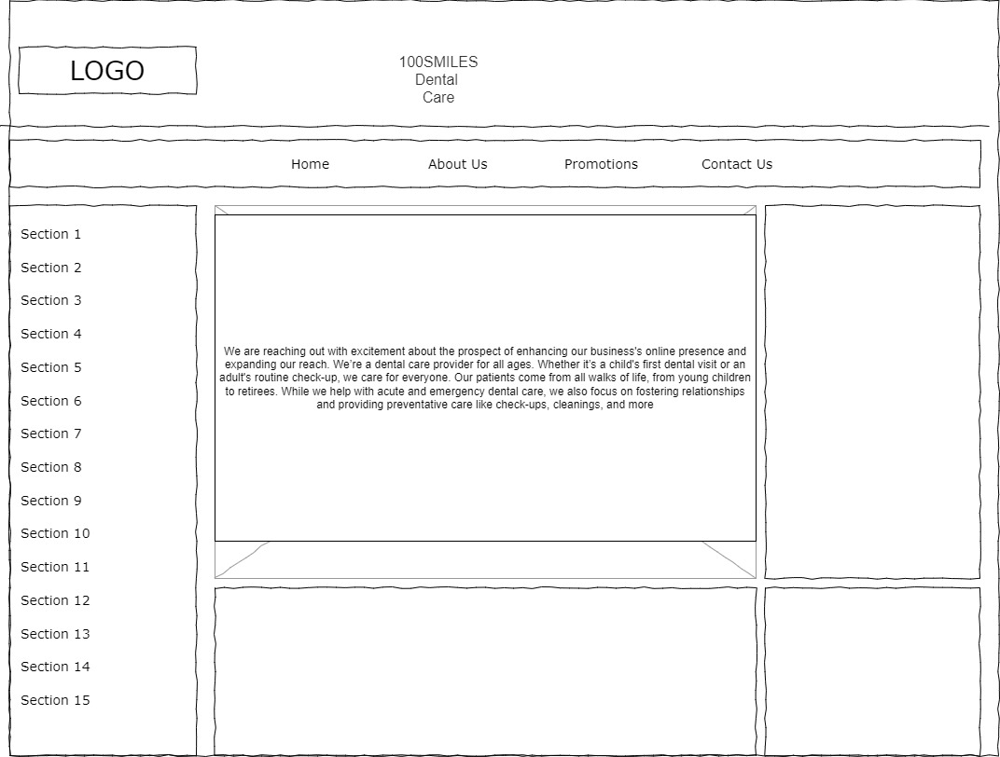

Name: Minghao Sun
This website is specifically targeted at middle-class professionals and young families aged 25-55 in the Razole region of Queensland. This group typically has busy work schedules, values health investment, and has the financial means and time to schedule regular dental care. For this specific audience, the website will be designed to: Optimize the mobile experience to ensure smooth access during commutes or work breaks Provide online booking functionality to accommodate their tight schedules Highlight convenient location information and flexible appointment times Use a professional yet welcoming visual design that conveys trust while maintaining a modern feel.
To measure whether the website has achieved its core goal of increasing online bookings by 20% within three months, the following quantitative evaluation methods will be used: Track the target conversion rate in Google Analytics and monitor online booking form submissions. Set up UTM parameters to analyze the booking conversion path of marketing campaigns. Conduct monthly telephone surveys to inquire about patients' initial booking channels. Monthly monitor the usage of website-specific discount codes (Like WEB20). Analyze bounce rate and average session duration to assess content relevance.
Our mission is to increase 100SMILES Dental Care's online appointment rate from the current 15% to 35% within six months by optimizing accessibility and transparency of digital channels, reducing wait times for phone consultations, and increasing brand online visibility in Razole regions. Specific goals include: A 20% increase in new patient online appointments within three months A reduction in website bounce rate from 65% to below 45% A reduction in patient appointment cancellation rate from 25% to 15% Achieving 30 annual check-up package bookings converted through the website per month
